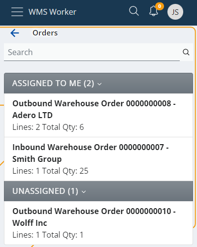

Orders
The "Orders" menu provides information on upcoming orders.

The order navigator is divided in two categories:
- ASSIGNED TO ME - the employee who is logged into their own account can check the orders they have for execution
- UNASSIGNED - orders that are not redirected to a specific employee and should be executed by someone who can take them
The total number of orders can be checked at the bottom of the page.
Order details
Click an order to see more information about it.

The details on the screen include:
- Assigned To - the employee who has to execute the order;
- Document Date - the date of the order
- Creation Time - the time and date of creation of the order;
- Lines Count - the rows number in the order table;
- Total Qty - the sum of quantities, regardless of the unit of measurement.
Click the Open button to open the order.
A summary of the order lines shows up:

The screen has three tabs:
- All - shows all lines in the order regardless of whether they have been fulfilled or not
- Remaining - shows rows that have not yet been fulfilled
- Executed - shows the rows that have already been fulfilled
The lines contain information about the requested product and its quantity.
- Task - shows the main task;
- Loc - stands for Location of the Product.
- Prd - stands for Product.
- Total Remain - shows how many pieces of the product need to be procured. The amount of the total number is written on the top line - Qty (4), and on the bottom line is written the quantity that remains to be obtained-Remaining (4). In this case, not a single piece of the total number has been received yet, and the necessary 4 pieces are yet to be procured.
- Еxec - a check mark appears in this column when the row is completed.
At the bottom of the screen, there are buttons that help complete the order. On the left side is the button to terminate the order (Stop), on the right is the button that indicates that the employee is ready to start the execution of the order (Execute), and in the middle there is a Menu button that allows access to all functions:

Location
Pressing the Execute button indicates that the order is in progress. The option to scan the location of the product will appear. There is already a suggested location that can be used if needed by clicking the Use button next to it:

Availability
AVAILABILITY is a reference through which the quantity of the product can be checked at different locations. The availability option is usable when the product has a Lot. Click to expand and see the availability for the specific product:

Click on the desired location to make the selection.
Product
After selecting the location, a field for scanning the Product will appear. You could use the product suggested by the system by clicking the Use button. The interface allows for the product to be replaced if needed. Even if the product is not replaced, it still needs to be scanned.

Lot
If the product has a Lot, the system will ask you to enter it. There could be a suggestion you can use again. The Lot can be scanned. However, if it does not have a barcode, it can be entered manually as long as it already exists in the system. You can check the AVAILABILITY section as well, if needed:

Quantity
The Quantity field allows the employee to select the unit and quantity of the product:

You can make the quick suggested action with the Use button or enter it manually. The INFO section underneath summarizes your previous selections.
Serial
Depending on the product, you might be asked for its serial number, with or without suggested value to use and with AVAILABILITY section again:

Once the serial number is selected, there is no need to fill in the Quantity field and it can be skipped.
Complete
When you are done with the execution of the order, press Complete Order. A pop-up window will appear asking for permission to change the status of the order to Completed.

After clicking Yes, you will be returned to the main Orders page and will be able to pick a new order to complete.
The execution of the order is reflected in the total number of orders left at the bottom of the screen.